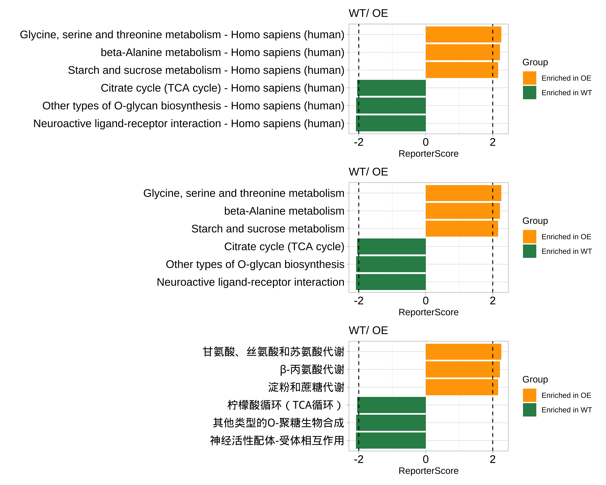
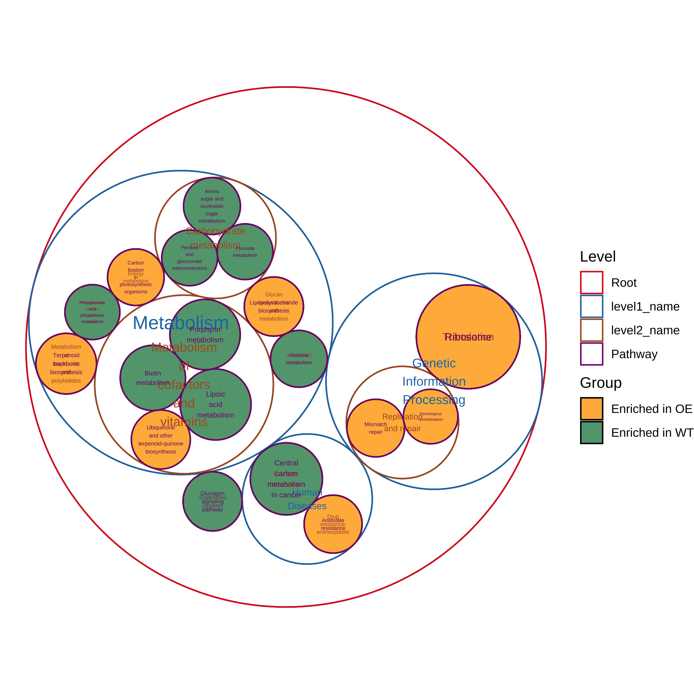
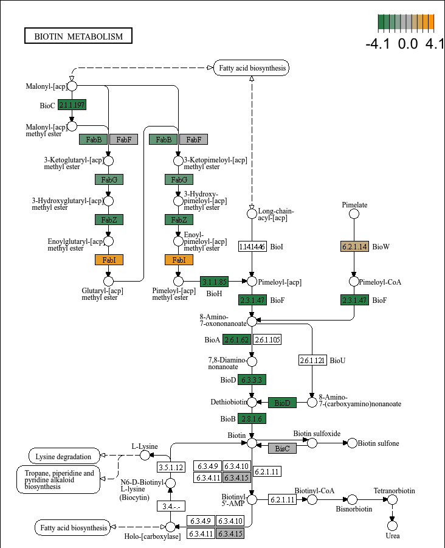
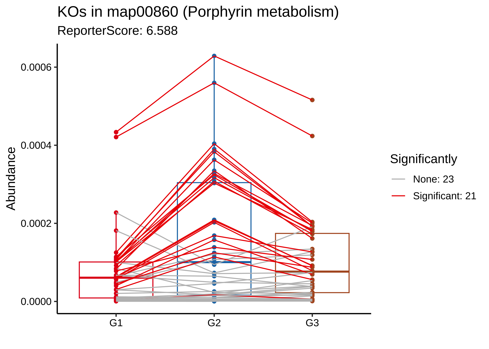
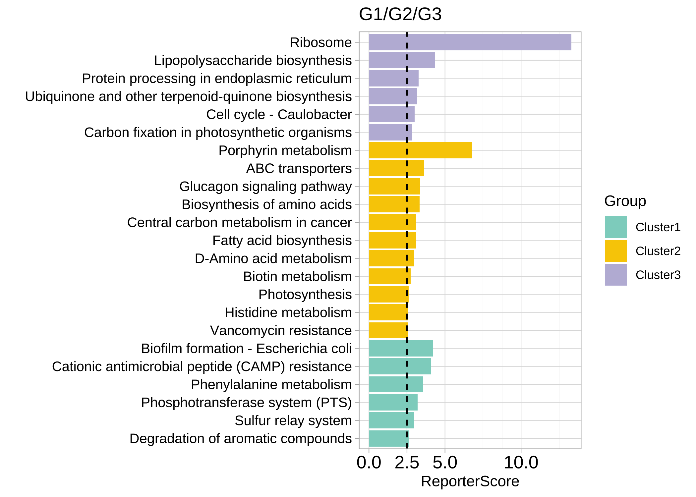
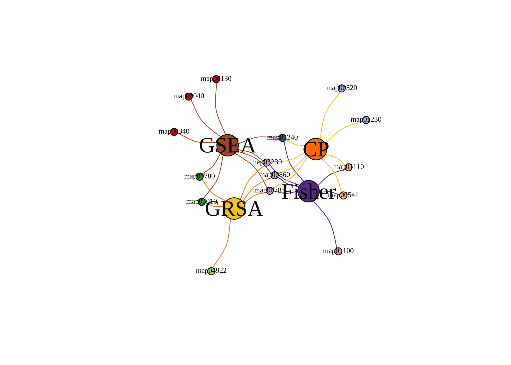
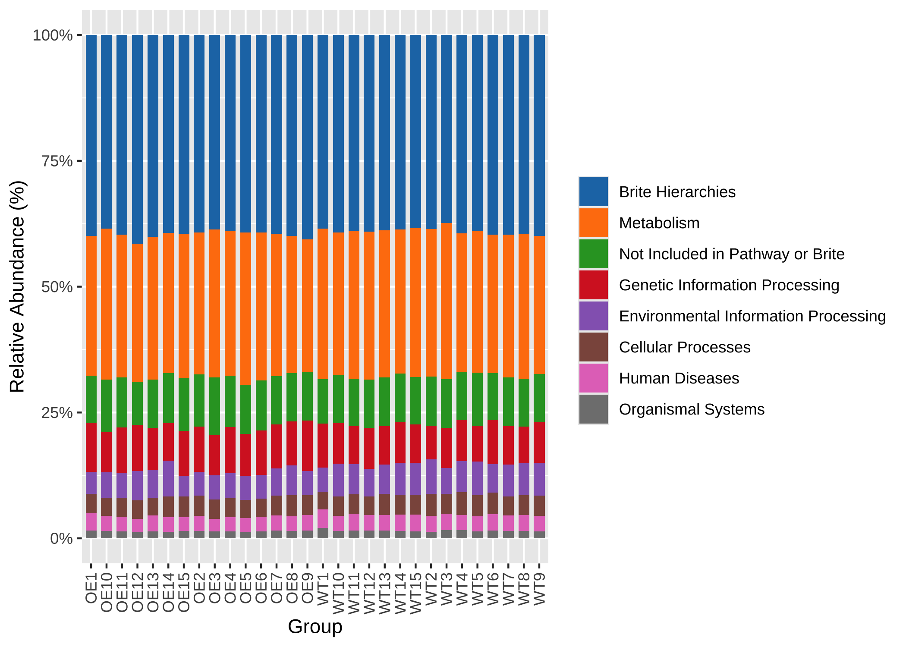

ReporterScore


受经典RSA启发，我们开发了改进的广义报告评分分析（GRSA）方法，并在R包ReporterScore中实现了该方法，还集成了全面的可视化方法和通路数据库。
GRSA是一种无阈值方法，适用于所有类型的生物医学特征，如基因、化合物和微生物物种。GRSA可在mixed模式（经典RSA）和directed模式（增强RSA）下工作。directed模式使用报告评分的符号区分上调或下调的通路，所以更直观。
重要的是，GRSA支持多组和纵向实验设计，因为它包含了与多组和纵向实验设计兼容的统计方法。 ReporterScore包还支持自定义的分层和关系数据库，为高级用户提供额外的灵活性。

最新版本的HTML文档可在Github 主页找到.
引用
在出版物中引用ReporterScore：
C. Peng, Q. Chen, S. Tan, X. Shen, C. Jiang, Generalized Reporter Score-based Enrichment Analysis for Omics Data. Briefings in Bioinformatics (2024). https://doi.org/10.1093/bib/bbae116.
安装
您可以从CRAN安装已发布版本的ReporterScore：
install.packages("ReporterScore")也可以从GitHub安装开发版本 ReporterScore：
# install.packages("devtools")
devtools::install_github("Asa12138/pcutils")
devtools::install_github("Asa12138/ReporterScore")使用
1. 输入数据（特征丰度表和元数据）
- 对于特定物种的转录组、单细胞RNA-seq和相关基因组学数据，可以使用完整的基因丰度表。
- 对于涉及多种不同物种的宏基因组和宏转录组数据，可以使用KO丰度表，使用Blast、Diamond或KEGG官方映射软件来将reads或contigs对齐到KEGG或EggNOG数据库。
- 对于代谢组数据，可以使用已注释的化合物丰度表，但需要进行化合物ID的标准化（例如，将化合物ID转换为KEGG数据库中的C编号）。
丰度表的格式：
⚠️ 重要提示：输入的丰度表不应进行预过滤（保留背景信息），因为‘GRSA’是一种无阈值的方法。
- 行名为特征ID（例如，“K00001”（KEGG K号）如果特征为“ko”；“PEX11A”（基因符号）如果特征为“gene”；“C00024”（KEGG C号）如果特征为“compound”）。
- 列名为样本。
- 丰度值可以是读数count或标准化值（例如TPM、FPKM、RPKM或相对丰度），对应适当的统计检验方法。
适用于KO丰度表的示例代码如下：
data("KO_abundance_test")
head(KO_abundance[, 1:6])
#> WT1 WT2 WT3 WT4 WT5 WT6
#> K03169 0.002653545 0.005096380 0.002033923 0.000722349 0.003468322 0.001483028
#> K07133 0.000308237 0.000280458 0.000596527 0.000859854 0.000308719 0.000878098
#> K03088 0.002147068 0.002030742 0.003797459 0.004161979 0.002076596 0.003091182
#> K03530 0.003788366 0.000239298 0.000445817 0.000557271 0.000222969 0.000529624
#> K06147 0.000785654 0.001213630 0.001312569 0.001662740 0.002387006 0.001725797
#> K05349 0.001816325 0.002813642 0.003274701 0.001089906 0.002371921 0.001795214你还应该提供一个实验设计元数据：
元数据表的格式：
- 行名为样本，列名为分组。
- 分组变量可以是类别（至少包含两个类别，用于差异丰度分析）。
- 分组变量也可以是多个时间点（用于纵向分析）。
- 分组变量也可以是连续变量（用于相关性分析）。
head(metadata)
#> Group Group2
#> WT1 WT G3
#> WT2 WT G3
#> WT3 WT G3
#> WT4 WT G3
#> WT5 WT G3
#> WT6 WT G1⚠️ 重要提示：元数据的行名和特征丰度表的列名应该匹配或部分匹配！
ReporterScore 将根据元数据的行名和特征丰度表的列名自动进行样本匹配。
2. 通路数据库
ReporterScore 包含内置的KEGG通路、模块、基因、化合物和GO数据库，并支持自定义数据库，使其能够兼容来自多种组学数据的特征丰度表。
你可以根据自己的分析需求选择以下任一方法来加载数据库：
对于KO丰度表，
ReporterScore包含内置的KEGG通路-KO和模块-KO数据库（2023-08版本）。您可以使用load_KOlist()查看这些数据库，并使用update_KO_file()更新这些数据库（通过KEGG API），保持数据库的最新性非常重要。对于化合物丰度表，
ReporterScore包含内置的KEGG通路-化合物和模块-化合物数据库（2023-08版本）。您可以使用load_CPDlist()查看这些数据库，并使用update_KO_file()更新这些数据库（通过KEGG API）。对于KO、基因和化合物丰度表，
ReporterScore包含人类（hsa）和小鼠（mmu）的内置通路-ko、通路-基因和通路-化合物数据库。您可以使用custom_modulelist_from_org()查看这些数据库。使用update_org_pathway()更新这些数据库，并下载其他生物数据库（通过KEGG API）。ReporterScore包含内置的GO-基因数据库。您可以使用load_GOlist()查看这些数据库，并使用update_GOlist()更新这些数据库（通过KEGG API）。您可以通过使用
custom_modulelist()自定义您自己的通路数据库（感兴趣的基因集）。
# 1. KEGG pathway-KO and module-KO databases
KOlist <- load_KOlist()
head(KOlist$pathway)
# 2. KEGG pathway-compound and module-compound databases
CPDlist <- load_CPDlist()
head(CPDlist$pathway)
# 3. human (hsa) pathway-ko/gene/compound databases
hsa_pathway_gene <- custom_modulelist_from_org(
org = "hsa",
feature = c("ko", "gene", "compound")[2]
)
head(hsa_pathway_gene)
# 4. GO-gene database
GOlist <- load_GOlist()
head(GOlist$BP)
# 5. 自定义自己的通路数据库
?custom_modulelist()3. 一步GRSA
使用函数 GRSA 或 reporter_score 可以一步得到Reporter Score结果。
⚠️分析中有一些重要的参数：
-
mode: “mixed” 或 “directed”（仅用于两组差异分析或多组相关分析。详情见
pvalue2zs）。 -
method: 计算p值的统计测试方法。默认为
wilcox.test：-
t.test（参数检验）和wilcox.test（非参数检验）。用于比较两组样本。 -
anova（参数检验）和kruskal.test（非参数检验）。执行单因素方差分析或Kruskal-Wallis秩和检验，比较多个组。 - “pearson”、“kendall” 或 “spearman”（相关性检验），参见
cor。 - “none”: 使用“none”进行“逐步富集”计算p值。您可以使用“DESeq2”、“Edger”、“Limma”、“ALDEX”、“ANCOM”等其他方法自行计算p值。
-
-
type: 选择内置的通路数据库：
- ‘pathway’ 或 ‘module’ 默认KEGG数据库适用于微生物组。
- ‘CC’, ‘MF’, ‘BP’, ‘ALL’ 默认GO数据库适用于人类。
- org 列在 https://www.genome.jp/kegg/catalog/org_list.html 中，例如 ‘hsa’（如果您的kodf来自特定的生物体，您应在此处指定type）。
-
modulelist: 自定义数据库。包含 ‘id’,‘K_num’,‘KOs’,‘Description’ 列的数据框。以
KOlist为例，使用custom_modulelist构建自定义数据库。 - feature: “ko”, “gene”, “compound” 中的一个。
分组中第一个将被设置为对照组，您可以更改因子水平以改变比较。
例如，我们想比较两组 ‘WT-OE’，并使用“directed”模式，因为我们只需要知道OE组中哪些通路上调或下调（反过来就是WT组通路下调或上调）：
KO-pathway
cat("Comparison: ", levels(factor(metadata$Group)), "\n")
#> Comparison: WT OE
# for microbiome!!!
reporter_res <- GRSA(KO_abundance, "Group", metadata,
mode = "directed",
method = "wilcox.test", perm = 999,
type = "pathway", feature = "ko"
)
#> ================================Use feature: ko=================================
#> ===============================Checking rownames================================
#> Some of your ko_stat are not KO id, check the format! (e.g. K00001)
#> 52.7% of your kos in the modulelist!
#> 30 samples are matched for next step.
#> ===========================Removing all-zero rows: 0============================
#> ===================================1.KO test====================================
#> =================================Checking group=================================
#> 30 samples are matched for next step.
#> ===========================Removing all-zero rows: 0============================
#> ==============================Calculating each KO===============================
#> ===========================Using method: wilcox.test============================
#> 1000 features done.
#> 2000 features done.
#> 3000 features done.
#> 4000 features done.
#>
#> Compared groups: WT, OE
#> Total KO number: 4535
#> Compare method: wilcox.test
#> Time use: 1.179
#> =========================2.Transfer p.value to Z-score==========================
#> ==========================3.Calculating reporter score==========================
#> ==================================load KOlist===================================
#> ===================KOlist download time: 2023-08-14 16:00:52====================
#> If you want to update KOlist, use `update_KO_file()`
#> ============================Calculating each pathway============================
#> 100 pathways done.
#> 400 pathways done.
#> ID number: 481
#> Time use: 1.689
#> ====================================All done====================================Gene-pathway
当您使用特定物种（例如人类）的基因丰度表时，请记得设置 feature 和 type 参数！或者通过 modulelist 提供数据库：
data("genedf")
# 方法 1: 设置 `feature` 和 `type` 参数
reporter_res_gene <- GRSA(genedf, "Group", metadata,
mode = "directed",
method = "wilcox.test", perm = 999,
type = "hsa", feature = "gene"
)
#> ===============================Use feature: gene================================
#> ===============================Checking rownames================================
#> please make sure your input table rows are gene symbol!
#> 100% of your genes in the modulelist!
#> 30 samples are matched for next step.
#> ===========================Removing all-zero rows: 0============================
#> ===================================1.KO test====================================
#> =================================Checking group=================================
#> 30 samples are matched for next step.
#> ===========================Removing all-zero rows: 0============================
#> ==============================Calculating each KO===============================
#> ===========================Using method: wilcox.test============================
#> 1000 features done.
#>
#> Compared groups: WT, OE
#> Total KO number: 1000
#> Compare method: wilcox.test
#> Time use: 0.224
#> =========================2.Transfer p.value to Z-score==========================
#> ==========================3.Calculating reporter score==========================
#> ================================load hsa pathway================================
#> =================hsa pathway download time: 2023-08-14 23:28:13=================
#> If you want to update hsa pathway, use `update_org_pathway('hsa')`
#> please assgin this custom modulelist to `reporter_score(modulelist=your_modulelist)` to do a custom enrichment.
#> You choose the feature: 'gene', make sure the rownames of your input table are right.
#> ============================Calculating each pathway============================
#> 100 pathways done.
#> 150 pathways done.
#> 200 pathways done.
#> 250 pathways done.
#> 300 pathways done.
#> ID number: 343
#> Time use: 1.558
#> ====================================All done====================================
# 方法 2: 通过`modulelist`给出数据库，结果与方法1相同.
hsa_pathway_gene <- custom_modulelist_from_org(
org = "hsa",
feature = "gene"
)
reporter_res_gene <- GRSA(genedf, "Group", metadata,
mode = "directed",
method = "wilcox.test", perm = 999,
modulelist = hsa_pathway_gene
)
library(patchwork)
p1 <- plot_report_bar(reporter_res_gene, rs_threshold = 2)
# 使用`modify_description`删除通路描述的后缀
reporter_res_gene2 <- modify_description(reporter_res_gene, pattern = " - Homo sapiens (human)")
p2 <- plot_report_bar(reporter_res_gene2, rs_threshold = 2)
# 使用“ggplot_translator”翻译通路描述
p3 <- pcutils::ggplot_translator(p2)
#> Please set the font family to make the labels display well.
#> see `how_to_set_font_for_plot()`.
p1 / p2 / p3
Compound-pathway
当您使用化合物丰度表时，请记得设置 feature 和 type 参数！或者通过 modulelist 提供数据库。
reporter_res_gene <- GRSA(chem_df, "Group", metadata,
mode = "directed",
method = "wilcox.test", perm = 999,
type = "hsa", feature = "compound"
)输出结果
结果是一个“reporter_score”对象：
| 元素 | 描述 |
|---|---|
kodf |
您的输入KO丰度表 |
ko_stat |
KO统计结果，包含p值和z分数 |
reporter_s |
每个通路中的报告者分数 |
modulelist |
默认的KOlist或自定义的模块列表数据框 |
group |
您数据中的比较组 |
metadata |
包含样本信息的数据框，包括组信息 |
重要的结果是 reporter_res$reporter_s，它是一个包含每个通路中报告者分数的数据框：
# 在Rstudio中查看data.frame
View(reporter_res$reporter_s)
# 将结果导出为.csv格式，并使用Excel进行查看：
export_report_table(reporter_res, dir_name = "~/Downloads/")4. 可视化
在获得Reporter Score结果后，我们可以通过多种方式进行可视化。
当我们关注整体结果时：
- 绘制显著富集的通路：
您可以设置 rs_threshold 来过滤部分通路， 默认的 rs_threshold 是 1.64， 对应的显著性水平为 0.05。
# View(reporter_res$reporter_s)
plot_report_bar(reporter_res, rs_threshold = c(-2.5, 2.5), facet_level = TRUE)
#> ==============================load Pathway_htable===============================
#> ===============Pathway_htable download time: 2024-01-12 00:52:39================
#> If you want to update Pathway_htable, use `update_htable(type='pathway')`
⚠️在directed模式下，富集在一个组中意味着在另一个组中下调。
- 绘制最显著富集的通路（珠包图）：
plot_report_circle_packing(reporter_res, rs_threshold = c(-2.5, 2.5))
#> ==============================load Pathway_htable===============================
#> ===============Pathway_htable download time: 2024-01-12 00:52:39================
#> If you want to update Pathway_htable, use `update_htable(type='pathway')`
#> Non-leaf weights ignored
#> Scale for fill is already present.
#> Adding another scale for fill, which will replace the existing scale.
当我们关注一条通路时，例如“map00780”：
- 绘制箱线图：
plot_KOs_in_pathway(reporter_res, map_id = "map00780")
- 绘制Z分数的分布图：
plot_KOs_distribution(reporter_res, map_id = "map00780")
- 绘制网络图：
plot_KOs_network(reporter_res,
map_id = c("map00780", "map00785", "map00900"),
main = "", mark_module = TRUE
)
- 在通路中绘制KOs丰度：
plot_KOs_box(reporter_res, map_id = "map00780", only_sig = TRUE)
#> `geom_smooth()` using formula = 'y ~ x'
- 在通路中绘制KOs丰度（热图）：
plot_KOs_heatmap(reporter_res,
map_id = "map00780", only_sig = TRUE,
heatmap_param = list(cutree_rows = 2)
)
- 绘制KEGG通路图：
plot_KEGG_map(reporter_res, map_id = "map00780", color_var = "Z_score")
多组或纵向研究
如果我们的实验设计涉及多于两组或纵向研究，我们可以选择多组比较（或相关分析）：
cat("Comparison: ", levels(factor(metadata$Group2)))
#> Comparison: G1 G2 G3
reporter_res2 <- GRSA(KO_abundance, "Group2", metadata,
mode = "directed",
method = "spearman", perm = 999
)
#> ================================Use feature: ko=================================
#> ===============================Checking rownames================================
#> Some of your ko_stat are not KO id, check the format! (e.g. K00001)
#> 52.7% of your kos in the modulelist!
#> 30 samples are matched for next step.
#> ===========================Removing all-zero rows: 0============================
#> ===================================1.KO test====================================
#> =================================Checking group=================================
#> 30 samples are matched for next step.
#> ===========================Removing all-zero rows: 0============================
#> ==============================Calculating each KO===============================
#> =============================Using method: spearman=============================
#> Using correlation analysis: spearman, the groups will be transform to numeric, note the factor feature of group.
#> 1000 features done.
#> 2000 features done.
#> 3000 features done.
#> 4000 features done.
#>
#> Compared groups: G1, G2, G3
#> Total KO number: 4535
#> Compare method: spearman
#> Time use: 0.549
#> =========================2.Transfer p.value to Z-score==========================
#> ==========================3.Calculating reporter score==========================
#> ==================================load KOlist===================================
#> ===================KOlist download time: 2023-08-14 16:00:52====================
#> If you want to update KOlist, use `update_KO_file()`
#> ============================Calculating each pathway============================
#> 100 pathways done.
#> 400 pathways done.
#> ID number: 481
#> Time use: 1.643
#> ====================================All done====================================
plot_KOs_in_pathway(reporter_res2, map_id = "map02060") + scale_y_log10()
指定pattern
例如，如果我们期望出现指数增长趋势，可以将组别 “G1”，“G2” 和 “G3” 设置为 1、10 和 100。
我们使用 1、5、1 来寻找表现为下降-上升-下降模式的通路。
reporter_res3 <- GRSA(KO_abundance, "Group2", metadata,
mode = "directed", perm = 999,
method = "pearson", pattern = c("G1" = 1, "G2" = 5, "G3" = 1)
)
plot_report_bar(reporter_res3, rs_threshold = 3, show_ID = TRUE)
plot_KOs_in_pathway(reporter_res3, map_id = "map00860")
为了探索数据中的潜在patterns，使用聚类方法，如C均值聚类。
rsa_cm_res <- RSA_by_cm(KO_abundance, "Group2", metadata,
method = "pearson",
k_num = 3, perm = 999
)
# show the patterns
plot_c_means(rsa_cm_res, filter_membership = 0.7)
plot_report_bar(rsa_cm_res, rs_threshold = 2.5, y_text_size = 10)
详细信息
逐步说明
单步函数 reporter_score/GRSA 包含三个部分：
data("KO_abundance_test")
ko_pvalue <- ko.test(KO_abundance, "Group", metadata, method = "wilcox.test")
ko_stat <- pvalue2zs(ko_pvalue, mode = "directed")
reporter_s1 <- get_reporter_score(ko_stat, perm = 499)ko.test: 此函数用于计算 KO_abundance 的 p-value，可使用各种内置方法，如差异分析 (t.test,wilcox.test,kruskal.test,anova) 或相关分析 (pearson,spearman,kendall)。您也可以使用其他方法计算 KO_abundance 的 p-value，比如 “DESeq2”, “Edger”, “Limma”, “ALDEX”, “ANCOM”，并自行进行 p.adjust，然后跳过ko.test步骤，继续下一步……pvalue2zs: 此函数将 KOs 的 p-value 转换为 Z 分数（选择模式: “mixed” 或 “directed”）。get_reporter_score: 此函数在特定数据库中计算每个通路的Reporter Score。您可以在此处使用自定义数据库。
以 “Limma” 为例：
# 1-1. 使用 Limma 计算 p-value
ko_pvalue <- ko.test(KO_abundance, "Group", metadata, method = "none")
ko_Limma_p <- pctax::diff_da(KO_abundance, group_df = metadata["Group"], method = "limma")
# 1-2. 替换 ko_pvalue 中的 p-value，记得匹配 KO_ids
ko_pvalue$`p.value` <- ko_Limma_p[match(ko_pvalue$KO_id, ko_Limma_p$tax), "pvalue"]
# 2. 使用 `pvalue2zs` 获取 Z 分数
ko_stat <- pvalue2zs(ko_pvalue, mode = "directed")
# 3. 使用 `get_reporter_score` 获取Reporter Score
reporter_s1 <- get_reporter_score(ko_stat, perm = 499)
# 4. 组合结果
reporter_res1 <- combine_rs_res(KO_abundance, "Group", metadata, ko_stat, reporter_s1)
# 然后可以使用 reporter_res1 进行可视化其他常用的富集方法
| Category | Method | Tools | Notes |
|---|---|---|---|
| ORA | Hypergeometric test / Fisher’s exact test | DAVID (website) , clusterProfiler (R package) | The most common methods used in enrichment analysis. Selecting a list of genes is required. |
| FCS | Gene set enrichment analysis (GSEA) | GSEA (website) | GSEA creatively uses gene ranking, rather than selecting a list of genes, to identify statistically significant and concordant differences across gene sets. |
| FCS | Generalized reporter score-based analysis (GRSA/RSA) | ReporterScore (R package developed in this study) | Find significant metabolites (first report), pathways, and taxonomy based on the p-values for multi-omics data. |
| FCS | Significance Analysis of Function and Expression (SAFE) | safe (R package) | SAFE assesses the significance of gene categories by calculating both local and global statistics from gene expression data. |
| FCS | Gene Set Analysis (GSA) | GSA (R Package) | GSA was proposed as an improvement of GSEA, using the “maxmean” statistic instead of the weighted sign KS statistic. |
| FCS | Pathway Analysis with Down-weighting of Overlapping Genes (PADOG) | PADOG (R package) | PADOGA assumes that genes associated with fewer pathways have more significant effects than genes associated with more pathways. |
| FCS | Gene Set Variation Analysis (GSVA) | GSVA (R package) | A nonparametric, unsupervised method that transforms gene expression data into gene set scores for downstream differential pathway activity analysis. |
| PT | Topology-based pathway enrichment analysis (TPEA) | TPEA (R package) | Integrate topological properties and global upstream/downstream positions of genes in pathways. |
组学数据常用的富集方法.
ReporterScore 还提供其他的富集方法，如 KO_fisher（fisher.test）、KO_enrich（fisher.test，来自 clusterProfiler）、KO_gsea（GSEA，来自 clusterProfiler）、KO_gsa（GSA，来自 GSA）、KO_safe（SAFE，来自 safe）、KO_padog（PADOG，来自 PADOG）、KO_gsva（GSVA，来自 GSVA）。
输入数据来自 reporter_score，同时支持自定义数据库，因此您可以轻松比较各种富集方法的结果，并进行全面的分析：
# View(reporter_res2$reporter_s)
# reporter_score
filter(reporter_res$reporter_s, abs(ReporterScore) > 1.64, p.adjust < 0.05) %>% pull(ID) -> RS
# fisher
fisher_res <- KO_fisher(reporter_res)
filter(fisher_res, p.adjust < 0.05) %>% pull(ID) -> Fisher
# enricher
enrich_res <- KO_enrich(reporter_res)
filter(enrich_res, p.adjust < 0.05) %>% pull(ID) -> clusterProfiler
# GESA
set.seed(1234)
gsea_res <- KO_gsea(reporter_res, weight = "Z_score")
#> Warning in preparePathwaysAndStats(pathways, stats, minSize, maxSize, gseaParam, : There are ties in the preranked stats (57.15% of the list).
#> The order of those tied genes will be arbitrary, which may produce unexpected results.
#> Warning in fgseaMultilevel(pathways = pathways, stats = stats, minSize =
#> minSize, : For some pathways, in reality P-values are less than 1e-10. You can
#> set the `eps` argument to zero for better estimation.
filter(data.frame(gsea_res), p.adjust < 0.05) %>% pull(ID) -> GSEA
venn_res <- list(GRSA = RS, Fisher = Fisher, CP = clusterProfiler, GSEA = GSEA)
library(pcutils)
venn(venn_res, "network")
其他功能
KOs高层级整合
KEGG BRITE 是一个层次分类系统的集合，捕捉了各种生物对象的功能层次结构，特别是那些作为 KEGG 对象表示的对象。
我们收集了 k00001 KEGG Orthology (KO) 表，因此您可以总结每个层级的丰度。使用 load_KO_htable 获取 KO_htable，并使用 update_KO_htable 进行更新。使用 up_level_KO 可以将 KOs 升级到特定的层级，例如 “pathway”、”module”、”level1”、”level2”、”level3”、“module1”、“module2”、“module3”。
KO_htable <- load_KO_htable()
#> =================================load KO_htable=================================
#> ==================KO_htable download time: 2024-01-12 00:49:03==================
#> If you want to update KO_htable, use `update_htable(type='ko')`
head(KO_htable)
#> level1_name level2_name level3_id level3_name
#> 1 Metabolism Carbohydrate metabolism map00010 Glycolysis / Gluconeogenesis
#> 2 Metabolism Carbohydrate metabolism map00010 Glycolysis / Gluconeogenesis
#> 3 Metabolism Carbohydrate metabolism map00010 Glycolysis / Gluconeogenesis
#> 4 Metabolism Carbohydrate metabolism map00010 Glycolysis / Gluconeogenesis
#> 5 Metabolism Carbohydrate metabolism map00010 Glycolysis / Gluconeogenesis
#> 6 Metabolism Carbohydrate metabolism map00010 Glycolysis / Gluconeogenesis
#> KO_id KO_name
#> 1 K00844 HK; hexokinase [EC:2.7.1.1]
#> 2 K12407 GCK; glucokinase [EC:2.7.1.2]
#> 3 K00845 glk; glucokinase [EC:2.7.1.2]
#> 4 K25026 glk; glucokinase [EC:2.7.1.2]
#> 5 K01810 GPI, pgi; glucose-6-phosphate isomerase [EC:5.3.1.9]
#> 6 K06859 pgi1; glucose-6-phosphate isomerase, archaeal [EC:5.3.1.9]
plot_htable(type = "ko")
#> =================================load KO_htable=================================
#> ==================KO_htable download time: 2024-01-12 00:49:03==================
#> If you want to update KO_htable, use `update_htable(type='ko')`
#> Warning: Vectorized input to `element_text()` is not officially supported.
#> ℹ Results may be unexpected or may change in future versions of ggplot2.
KO_level1 <- up_level_KO(KO_abundance, level = "level1", show_name = TRUE)
#> =================================load KO_htable=================================
#> ==================KO_htable download time: 2024-01-12 00:49:03==================
#> If you want to update KO_htable, use `update_htable(type='ko')`
pcutils::stackplot(KO_level1[-which(rownames(KO_level1) == "Unknown"), ]) +
ggsci::scale_fill_d3() +
theme(axis.text.x = element_text(angle = 90, hjust = 1, vjust = 0.5))
CARD for ARGs
为了方便，我还整合了CARD数据库的描述信息 https://card.mcmaster.ca/download/0/broadstreet-v3.2.8.tar.bz2.
CARDinfo <- load_CARDinfo()
#> =================================load CARDinfo==================================
#> ==================CARDinfo download time: 2024-01-12 01:12:11===================
#> If you want to update CARDinfo, use `update_GOlist()`
head(CARDinfo$ARO_index)
#> ARO Accession CVTERM ID Model Sequence ID Model ID
#> 3005099 ARO:3005099 43314 6143 3831
#> 3002523 ARO:3002523 38923 8144 1781
#> 3002524 ARO:3002524 38924 85 746
#> 3002525 ARO:3002525 38925 4719 1246
#> 3002526 ARO:3002526 38926 228 1415
#> 3002527 ARO:3002527 38927 5510 2832
#> Model Name
#> 3005099 23S rRNA (adenine(2058)-N(6))-methyltransferase Erm(A)
#> 3002523 AAC(2')-Ia
#> 3002524 AAC(2')-Ib
#> 3002525 AAC(2')-Ic
#> 3002526 AAC(2')-Id
#> 3002527 AAC(2')-Ie
#> ARO Name
#> 3005099 23S rRNA (adenine(2058)-N(6))-methyltransferase Erm(A)
#> 3002523 AAC(2')-Ia
#> 3002524 AAC(2')-Ib
#> 3002525 AAC(2')-Ic
#> 3002526 AAC(2')-Id
#> 3002527 AAC(2')-Ie
#> Protein Accession DNA Accession AMR Gene Family
#> 3005099 AAB60941.1 AF002716.1 Erm 23S ribosomal RNA methyltransferase
#> 3002523 AAA03550.1 L06156.2 AAC(2')
#> 3002524 AAC44793.1 U41471.1 AAC(2')
#> 3002525 CCP42991.1 AL123456.3 AAC(2')
#> 3002526 AAB41701.1 U72743.1 AAC(2')
#> 3002527 CAC32082.1 AL583926.1 AAC(2')
#> Drug Class
#> 3005099 lincosamide antibiotic;macrolide antibiotic;streptogramin antibiotic
#> 3002523 aminoglycoside antibiotic
#> 3002524 aminoglycoside antibiotic
#> 3002525 aminoglycoside antibiotic
#> 3002526 aminoglycoside antibiotic
#> 3002527 aminoglycoside antibiotic
#> Resistance Mechanism CARD Short Name
#> 3005099 antibiotic target alteration Spyo_ErmA_MLSb
#> 3002523 antibiotic inactivation AAC(2')-Ia
#> 3002524 antibiotic inactivation AAC(2')-Ib
#> 3002525 antibiotic inactivation AAC(2')-Ic
#> 3002526 antibiotic inactivation AAC(2')-Id
#> 3002527 antibiotic inactivation AAC(2')-Ie